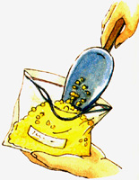

Issue # 175 - August/September 1999
Free oxygen is a major culprit in food spoilage. When food browns, its components join with oxygen, or "oxidize," much as iron does when it rusts. Oxygen is also necessary for molds, yeast and aerobic bacteria to survive and wreak their damage. You needn't worry with canned foods that have been properly heat/vacuum-packed. But lacking such in-container heat-treatment, even if sterile product is vacuum-packed in sterile containers, the small amount of air that accompanies it will contain oxygen and may not have been heated sufficiently to kill spores that have been faithfully killed on container and in product.
These things are best for fresh or freshly opened foods that you want to keep fresh in a refrigerator or for dry foods such as chips that you want to stay crisp. Lettuce will keep for weeks in an evacuated bag, cheese for months, Tostitos for all eternity.
The most effective way to prevent oxygen damage is to remove and replace the oxygen with an inert gas. All those clear cello-packs of potato or corn chips, pretzels or popcorn that display their contents of salt and greasy calories so effectively on supermarket shelves are inflated with nitrogen gas. Punch a small hole in one and squeeze the gas inside onto a burning match. The flame will go out.
To store grain and dry goods for years, keep them in plastic bags filled with nitrogen and seated inside plastic tubs or metal cans.
You can have food-quality nitrogen delivered and empty containers picked up by medical gas suppliers. It comes in pressure bottles similar to propane tanks (don't try liquid nitrogen). The long bottles must be supported upright in a rack or wheeled daily, and you'll need to rent or buy a nitrogen pressure regulator to keep the gas at low pressure.
For easy filling and sealing, store everything to be nitrogen-packed-even if it is to go into a hard container-inside plastic pouches. (Ziploc-style is easiest, as the bags are boilable/sterilizable alone or with produce inside and are washable and reusable.)
To fill with nitrogen, seal all but a corner of the Ziploc, then squeeze out as much air as you can. Hold bag upright so heavy nitrogen will fill the bag and force lighter oxygen up and out. Fill to puff-full with nitrogen; continue to hold bag upright for a few more seconds, then press out most of the gas and seal.
As an extra safeguard, get one of those inexpensive barbecue lighters with a plastic handle that produces its little flame with a piezo-spark at the end of a long, metal snout. As you fill the Ziploc with nitrogen, hold the flaming lighter at the opening. When the flame goes out, you know that all the oxygen has been driven out.
Preserving Vegetables And Fruits
Freezing and Canning
|
 |
|
|